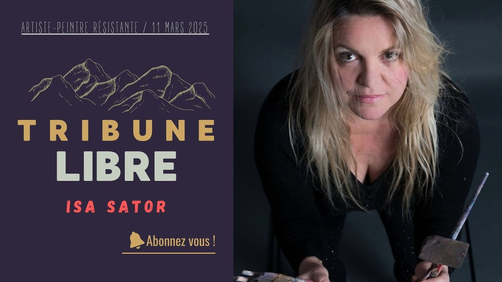
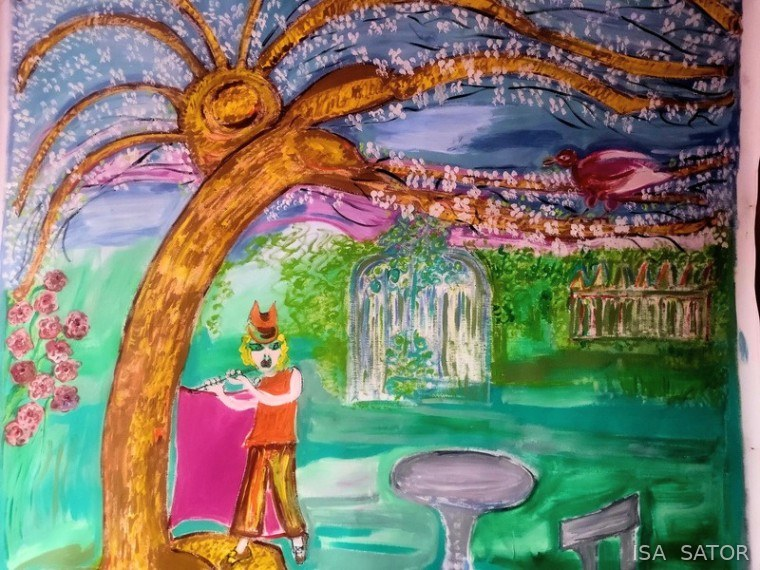

Foto: Frédéric Lipzyc
Foto: Frédéric Lipzyc
IsaSator
Artista cotizada internacionalmente (Artprice)
Colorista y artista plástica visionaria
Veinticuatro obras adjudicadas en subastas públicas desde 2005. Expuesta en París, Nueva York, Dubái, Londres y Houston. Color, energía & talismán, para almas fuertes.
- Cotizada en Artprice: 24 adjudicaciones en subastas públicas
- 2003 Numea, primera exposición
- 2004 Salon des artistes français, Paris
- 2005 Medalla de oro y premio especial del jurado, Fréjus
- 2005 Primera venta en subasta, Aguttes
- 2006 Dubái y Courchevel
- 2007 National Arts Club, New York
- 2009 Carrousel du Louvre, Paris
- 2014 Brixton, Londres
- 2016 Art Élysées, Paris
- 2017 Orangerie du Sénat, Paris
- 2017 Houston, Washington, Raleigh
- 2019 Gallery des Artistes, New York
- 2026 Les Vierges Polaires, Nuoro, Cerdeña
- Galerías Jyb’Art y JPHT, París
- Referenciada en el diccionario Delarge
- Derechos gestionados por la ADAGP

La artista
El color es la palabra de mi inspiración
«La mayor parte de mi trabajo se hace de noche. En el tejido de mis sueños, recibo. Y al despertar, la pintura automática se pone en marcha.»
Me acompaña a todas partes y sin él, palidezco. Le doy correspondencias emocionales, vibracionales y simbólicas. Es bastante mágico. No busco comprender. Me gusta este diálogo con lo irracional, es como un compañero.
Mis lienzos son símbolos de vida y de esperanza. Ante la adversidad, respondo con la fuerza y la alegría de vivir y de ser. Resulta que tengo unas ganas furiosas de existir, contra todo y contra todos.
Pintora colorista autodidacta, que volvió de Nueva Caledonia con el color como lengua, Isa Sator expone desde 2003 en París, Nueva York, Dubái, Londres, Houston y, en 2026, en Cerdeña. Cotizada en Artprice, que registra veinticuatro de sus obras adjudicadas en subastas públicas, de 2005 en Aguttes a 2026, está representada por la galería Jyb'Art (Levallois-Perret) y la Galerie JPHT (París), referenciada en el diccionario de artes plásticas Delarge, y sus derechos los gestiona la ADAGP. La prensa sarda la describe como «un Picasso del siglo XXI».
«Isa Sator es pintora, absolutamente pintora. [...] Desde hace algunos años se impone como una pintora mayor de la escena parisina.»Jean-Louis Poitevin, crítico de arte, ficha Artprice
Lo esencial de la crítica, en un minuto
- EntrevistaCarly Aguilera, South Art Dealer Gallery, New York
- EntrevistaJean-Philippe Théron, exposición ADN Sator, Galerie JPHT, París
- EntrevistaStéphanie Reynaud, Tribune Libre, 11 de marzo de 2025: la serie Les Grandes Cocottes
- CríticaJean-Paul Gavard-Perret, exposición en el Théâtre Déjazet, París
- CríticaJean-Paul Gavard-Perret, Le Littéraire, junio de 2026: «Isa Sator, ouverture de son atelier à Magic City»
- CríticaJean-Paul Gavard-Perret, Le Littéraire, junio de 2024: «Isa Sator, La palette magique»
- CríticaJean-Paul Gavard-Perret, Le Littéraire, junio de 2017: «Isa Sator, Les Grandes Cocottes»
- CríticaMylène Vignon, Saisons de culture, 2017: «Les grandes cocottes»
- LibroLes Grandes Cocottes, L'Œil de la femme à barbe, 2017: catálogo bilingüe, conservado en la Bibliothèque nationale de France
- ArtículoLéa Berroche, Arts Culture évasions, 12 de julio de 2024: «Isa Sator»
- ArtículoLe Petit Journal New York: «Isa Sator expone en Nueva York su arte lleno de color»
- CotizaciónSu ficha Artprice: 24 resultados de subasta, biografía, galerías
- GaleríaGalerie JPHT, París: la página de Isa Sator, sus exposiciones desde 2015

- 24obras adjudicadas en subastas públicas, de 2005 a 2026Artprice
- 5países de exposición: Francia, Estados Unidos, Emiratos Árabes Unidos, Reino Unido, Italia
- 2galerías: Jyb'Art en Levallois-Perret, Galerie JPHT en París
- 2005medalla de oro en Fréjus, medallas de bronce en París (Académie de Lutèce) y en Verdún
Isa Sator tiene su artículo en Wikipedia, la enciclopedia libre (en francés)
Miradas críticas
Lo que dicen los críticos
Elogiada por varios críticos de arte, en París, Nueva York y Cerdeña. Lo esencial, en un minuto.
«Isa Sator es pintora, absolutamente pintora. […] Desde hace algunos años se impone como una pintora mayor de la escena parisina.»
«¿Cómo no mirar lienzos que nos arrancan de la indiferencia generalizada?»
«Ha nacido una artista, que nos irradia con sus colores de una intensidad casi cegadora y nos colma con su generosidad.»
«Un Picasso del siglo XXI, como sin duda se la podría definir.»
«Esta pintura deshace los lazos de lo visible para que lo inasible tome paradójicamente cuerpo.»
«El trabajo de la artista no pasa desapercibido: contrastes muy fuertes, pinturas muy alegres.»
Comparada con los grandes maestros
«En la línea de artistas como Picasso y Chagall, las creaciones de Sator son una rara combinación de sensualidad, ingenuidad, feminismo y viveza de colores y de ánimos.»
«Como Paul Gauguin, Sator perfeccionó su arte en los mares del Sur. Hoy vive y trabaja en París, donde los críticos han comparado sus óleos expresionistas abstractos con Chagall, e incluso con Picasso.»
«Increíblemente dotada, con un impulso creador sin límites, la artista inventa un lenguaje en la encrucijada de pintores como Nolde, Cocteau, Masson, Joëlle de La Casinière y Basquiat.»
«La fuerza sigue ahí, pero el trazo se ha afinado. […] Sin duda, la fuerza está con ella.»
Los textos de Nueva York están traducidos del inglés; los de Jean-Paul Gavard-Perret y Patrick Wassef se citan según el portfolio de la artista (2017).
Extractos traducidos del francés y del italiano, con el enlace a cada texto completo.
El léxico de Isa Sator
- Rojo
- La pasión.
- Verde agua
- El poder secreto de la mujer.
- Azul marino
- El dolor.
- Amarillo
- La fulguración.
Entrar en el taller
Los grandes formatos
Seis lienzos en los que la superficie cuenta tanto como el motivo. Presentados aquí a todo lo ancho, al tamaño que reclaman.


Obras disponibles
Veintidós piezas únicas, acrílico y técnica mixta sobre lienzo. Cada lienzo busca a su guardián: escriba al taller para adquirirlo o venir a verlo.
Las series
«Trabajo por series. Presento una veintena de obras por serie, en las que cuento una historia maravillosa que les traerá un talismán contra el miedo y a favor de la alegría.»
El catálogo
Los 162 lienzos catalogados, numerados de TB01 a TB162. Haga clic para ampliar.
Pintora antes de saber leer
Isa Sator pinta desde que se cayó de la cuna: supo pintar antes de saber leer y escribir. Se hizo abogada para «enterrar su locura bajo el traje de la mujer irreprochable», y luego dejó que esta última estallara en pleno vuelo.
Tras casi diez años descubriendo otros espacios-tiempo al otro lado del Pacífico, volvió de Nueva Caledonia convertida en pintora, totalmente autodidacta.
Su trabajo celebra la feminidad, la fuerza interior y el misterio de lo vivo. Cada obra es una pieza única, pensada como una joya con carácter.
- New York, 2007Primera exposición americana, National Arts Club, Gramercy Park.
- Galerie JPHT, ParisExposición sobre el tema ADN Sator.
- Théâtre Déjazet, ParisExposición, crítica de Jean-Paul Gavard-Perret.
- South Art Dealer GalleryEntrevista con Carly Aguilera, Nueva York.
- Experiencia sensorialEl color se vuelve sonido: una espiral cantante recorre el cuadro.
Exposiciones, de Numea a Nueva York
- 2003Mujeres escultoras del taller Michel Rocton, Hôtel Park Royal, Numea (marzo)
- 2004Salon des Artistes Français, París, selección del jurado para Le Cri intérieur (octubre); Banque BNC, Numea, Noume'Art y Soap'Art Océanie (octubre); presidenta de Soap'Art Océanie, asociación para la promoción del arte contemporáneo en Nueva Caledonia; medalla de bronce con mención en el 36º Gran concurso internacional de la Académie internationale de Lutèce
- 2005Salón de arte moderno y contemporáneo de la Fédération nationale de la culture française, Fréjus (mayo): medalla de oro y premio especial del jurado del Gran concurso internacional de Fréjus, medalla europea y trofeo Abstracción lírica de las Victoires 2005; subasta pública por Me Aguttes, Hôtel Drouot (22 de septiembre); Vertige de l'amour e Il était une fois, subasta pública por Me Michel Rambert, Hôtel des ventes Tuilliers, Metz (19 de noviembre)
- 2006Galerie Mona Lisa, París (abril); Super Zaza, subasta benéfica por Me Cornette de Saint-Cyr, Drouot-Montaigne (junio); Les Copines 2, subasta pública por Me Cornette de Saint-Cyr, Hôtel Drouot (23 de octubre); Salón 16th International Middle East Furniture and Interior Design, Dubái (noviembre); Galerie Daniel Besseiche, Courchevel (diciembre); Galerie Les Pyramides, Port-Marly, colectiva (diciembre)
- 2007Les Bécassines Rock'n Roll, Centre culturel La Salorgne, Bretaña (marzo); Galerie Les Arts du 7e, París (de marzo a mayo), con una venta benéfica a favor de Les Toiles Enchantées, asociación presidida por Alain Chabat, en presencia de Me Pierre Cornette de Saint-Cyr; Une orange à Central Park y Nikky, subasta pública (14 de abril); Les Arlésiennes Swinging, Galerie Saint-Ravy, Montpellier (abril-mayo); Bécassine superstar, subasta pública por la casa Tajan (26 de junio); Smart Barbies, National Arts Club, Gramercy Park, Nueva York (septiembre); miembro del National Arts Club de Nueva York (octubre)
- 2008Programa Au quotidien en RFO, obras colgadas en el plató y participación en el programa (febrero); Animus Domina, barcaza Café Barge, París (de junio a agosto); Grand Marché d'art contemporain, París Bastille (octubre); La Souris du Pirate, subasta pública por Me Cornette de Saint-Cyr (20 de octubre); La Versaillaise, subasta pública por Me Christophe Joron-Derem (9 de diciembre)
- 2009Proyecto de cartel para el Festival de Cannes (enero); Les grands maîtres de demain, invitada de honor, Carrousel du Louvre, París (octubre); Les Versaillaises, ayuntamiento de Versalles, colectiva (diciembre); Rock'n Roll at All, exposición individual sobre los iconos del rock, Virgin Megastore de los Campos Elíseos, París (octubre)
- 2010Banque Barclays, faubourg Saint-Honoré, París (mayo)
- 2011African Queens, exposición individual, Galerie du Vertbois, rue du Vertbois (distrito 3), París (abril-mayo); Les peuples de la vallée de l'Omo, Galerie 66 Champs-Élysées, París (noviembre)
- 2013L'Amour, Galerie Manart, París (abril-mayo)
- 2014Las 12 ciudades del Mundial de Brasil, Brixton, Londres (marzo); Carré artistique des équations, Grand Hôtel, Reims (mayo)
- 2015Lanzamiento oficial del sitio web de la artista, Comédie Montmartre, París (septiembre); ADN Sator, Galerie JPHT, París, inauguración en presencia de Me Cornette de Saint-Cyr para una subasta (octubre-noviembre)
- 2016Art Élysées, Espace Beaurepaire y Tapis by Félix, París; La Table Fleurie, Montreuil
- 2017Les Grandes Cocottes, Orangerie du Sénat, Jardin du Luxembourg, París (del 10 al 21 de agosto), con la edición del catálogo Les Grandes Cocottes; en Estados Unidos, series ADN Sator y Smart Barbies: Raleigh, Carolina del Norte (del 9 al 12 de febrero), Houston, Texas (del 1 al 5 de marzo), Washington, embajada de Francia (del 1 al 5 de mayo), Los Ángeles y Chicago (segundo semestre)
- 2018Erotic'art, Galerie l'Espace Grange, Dampierre (del 14 de febrero al 4 de marzo); Portraits de famille de Bécassine, Galerie JPHT, París (junio-julio)
- 2019Trois femmes de Paris à New York, Galerie JPHT, París (mayo y diciembre), y Gallery of Artists, Nueva York (octubre); Women Artists Itinerancy #02, New Hope (Pensilvania) y Nueva York
- 2020Referenciada en la Galerie Ludwig Trossaert (Amberes, Londres, París, Nueva York); obras difundidas en cuatro plataformas; finalización de la serie Armageddon, bulevar de Montmorency, París
- 2021Armageddon, galería Jyb'Art, Levallois-Perret
- 2023Pop Circus, galería Echomusée, París (del 23 al 30 de abril); Journée de la rose, Orangerie del jardín de Bagatelle (junio); exposición de lienzos en el palacete de Anne-Marie Mitterrand
- 2024Joie et Lumière (4 de julio) y Armageddon (5 de diciembre), Espace Élisabeth Oster, París; La Palette magique, exposición individual, despacho de Maître Élisabeth Oster, 6 avenue Mac-Mahon, París 17 (del 5 al 22 de julio)
- 2025Connecting People, Espace Élisabeth Oster, París (desde el 3 de marzo); Cagliari je t'aime, exposición individual Les Vierges Polaires, Spazio Espositivo Artè, galería Luciano Marani, Cagliari, Cerdeña (del 15 al 31 de agosto); Les Vierges Polaires, exposición individual, Cerdeña (septiembre)
- 2026Les Vierges Polaires, Casa Vacanze Ortobene Arte, Nuoro, Cerdeña (del 3 al 31 de enero), exposición individual comisariada por Gonaria Nevina Lai, en colaboración con la asociación Sardonia
Según la ficha Artprice, el artículo Isa Sator de Wikipedia y el diccionario de artes plásticas Delarge. Obras presentes en Artnet y Artsper. Cronología completada a partir del currículum de la artista.
Subastas públicas
Artprice registra veinticuatro adjudicaciones, todas en Francia, de 2005 a 2026. Entre ellas:
- 2005Le Templier, Aguttes, primera venta registrada
- 2007Super Zaza
- 2015Replay
- 202011 Septembre
- 2026Jument ailée, de la serie Armageddon
- 2026Smart Barby on a VIP, Blanchet & Associés, Paris
Sus lienzos también han pasado por Cornette de Saint-Cyr, Tajan y Joron-Derem, de 2005 a 2008, y por ventas benéficas a favor de Les Toiles Enchantées.
Han escrito
«Un Picasso del siglo XXI, como sin duda podría definírsela: esta pintora colorista no deja de mostrarnos su talento explosivo a través de todas las exposiciones individuales en las que participa.»Vittorio E. Pisu, Casa Vacanze Ortobene Arte News, Nuoro, diciembre de 2025 (traducido del italiano)
«Una artista deslumbrante, que ya expone no solo en París, en la Orangerie du Sénat y en otras galerías, sino también en Nueva York, Miami, Tokio y, en este momento, en Rusia, donde ha sido invitada.»Gonaria Nevina Lai, comisaria de la exposición Les Vierges Polaires, Nuoro, 2025 (traducido del italiano)
«Isa Sator es pintora, absolutamente pintora. La aparente ligereza de algunos de sus temas recientes, las Cocottes o Loïe Fuller, las Mil y una noches o la exuberancia de la naturaleza, no debe ocultar que su manera de pintar y su mirada profundamente femenina asumen cuestiones esenciales que agitan este mundo. [...] Así es como, desde hace algunos años, se impone como una pintora mayor de la escena parisina.»Jean-Louis Poitevin, crítico de arte, texto recogido en su ficha Artprice
Actualidad
Ventas, exposiciones y prensa. Haga clic en una imagen para ampliarla.
-
1 de noviembre de 2026
Dos lienzos en subasta en Catawiki
Dos de mis lienzos salen a subasta en Catawiki, tras la selección de sus expertos. Precio de salida: 1 euro.
Fanfan, 2007, serie Les Normands, acrílico sobre lienzo, Al 47 × An 38 cm. Seleccionado por Caroline Bokobza, subastadora titulada en Francia, que trabajó en el departamento de peritaje de Sotheby's París. Estimación de 600 a 800 €, cierre el jueves 5 de noviembre de 2026 a las 22:45. Ver el lote Fanfan en Catawiki Le Harem, serie Les 1001 Nuits, acrílico sobre lienzo, Al 90 × An 130 cm. Seleccionado por Petra Skarupsky. Estimación de 1.500 a 1.800 €, cierre el miércoles 4 de noviembre de 2026 a las 19:02. Ver el lote Le Harem en Catawiki -
7 de octubre de 2026
Smart Barby on a VIP sale a subasta

Conoció Nueva York en 2007. Diecinueve años después, mi Smart Barby deja el taller para la subasta Blanchet & Associés, en París. Busca a su guardián.
Sentada en una copa de champán, echa la cabeza hacia atrás, cierra los ojos y deja caer su cabellera de oro. Un caniche negro monta guardia a sus pies. Alrededor: fiesta, fuego y lentejuelas.
Pinté las Smart Barbies en 2007, mucho antes de que el cine se apoderara de la muñeca. Tomé el símbolo más caricaturesco de lo femenino e hice otra cosa con él: mujeres múltiples, executive women, cantantes de ópera, grandes sacerdotisas, bimbos soberanas. Ninguna se deja meter en una caja.
Smart Barby on a VIP, 2007 · acrílico sobre lienzo, Al 120 × An 60 cm, firmado abajo a la derecha Subasta Blanchet & Associés del 14 de octubre de 2026 · 97 boulevard Malesherbes, 75008 París Lote n.º 320. El resultado figura ya entre las veinticuatro adjudicaciones registradas por Artprice. -
5 de febrero de 2026
«Magic City», nuevo lienzo

Parejas con sombrero de copa y vestidos de agua bailan bajo una lluvia de rayas rosas y destellos de oro: la ciudad mágica según Isa Sator.
-
17 de diciembre de 2025
«Les Vierges Polaires», exposición individual en Nuoro, Cerdeña
Del 3 al 31 de enero de 2026, la Casa Vacanze Ortobene Arte (Via Monte Jaca 47 bis, 08100 Nuoro) acoge una exposición individual de Isa Sator, comisariada por Gonaria Nevina Lai, con la participación de la asociación Sardonia. Inauguración el sábado 3 de enero de 2026 a las 18 h.
El periódico de la galería le dedica dos páginas: «un Picasso del siglo XXI, como sin duda podría definírsela», escribe Vittorio E. Pisu; «una artista deslumbrante, que ya expone no solo en París, en la Orangerie du Sénat y en otras galerías, sino también en Nueva York, Miami, Tokio y, en este momento, en Rusia, donde ha sido invitada», añade Gonaria Nevina Lai.
·
Leer el periódico en español (traducido del italiano)
Editorial de Gonaria Nevina Lai, página 1
Cómo no alegrarse de inaugurar este año 2026 mirando a 2025, que vio la creación de este espacio dedicado al arte, no solo plástico sino también musical y literario, en un lugar antes consagrado a los cuidados del cuerpo y hoy a los del espíritu. Casi hemos perdido la cuenta de todas las manifestaciones, desde la colectiva de pintura que ya acogía a cinco fotógrafos franceses hasta la conferencia sobre el Árbol de Ignazio Pani, ya expuesto a través de sus fotografías de Nubes, que nos invitan a considerar de otro modo no solo los estratocúmulos y otros cumuloestratos, sino también nuestro planeta, que a través de estas imágenes nos habla y nos advierte.
Y estamos realmente orgullosos de acoger en Nuoro a una artista deslumbrante, que ya expone no solo en París (en la Orangerie du Sénat y en otras galerías), sino también en Nueva York, Miami, Tokio y, en este momento, en Rusia, donde ha sido invitada. La asociación Sardonia la había convencido de venir a Cerdeña, donde finalmente presentó, no solo en Cagliari sino también en Iglesias, en la asociación Remo Branca, dos grandes lienzos y una docena de pequeños formatos creados para la ocasión, en respuesta a nuestra propuesta, lo que nos permite presentárosla aquí, en Nuoro.
Estamos naturalmente agradecidos a todas las personas, artistas emergentes o consagradas, que han participado en las manifestaciones que hemos organizado y que nos reafirman en la idea de seguir proponiéndoos no solo pintura o fotografía, sino también música, literatura y hasta bonsái, gracias a Ignazio Pani. Deseándoos un feliz comienzo de año, que vemos lleno de perspectivas artísticas, os esperamos en esta exposición. G. N. Lai
«Les Vierges Polaires», el artículo de Vittorio E. Pisu, páginas 1 y 2
Hablar de la pintura de Isa Sator, como de su persona, puede parecer fácil a los cronistas superficiales, pero no lo es en absoluto. ¿Cómo llegar, en efecto, a describir una pintura cosmogónica, chisporroteante de colores como unos fuegos artificiales, que muestra una realidad que se nos había escapado y que, sobre todo, se enfrenta a los mitos femeninos más densos y menos explorados, salvo superficialmente por algún macho distraído?
Sus formas generosas, su sonrisa cautivadora, sus ojos que brillan de malicia y que os sopesan y os clasifican rápidamente son imposibles de ignorar. Habría sido increíble que su pintura no se le pareciera (aunque podría ocurrir de un día para otro).
Picasso del siglo XXI, como sin duda podría definírsela, y quizá incluso llegando a serlo de verdad, esta pintora colorista no deja de mostrarnos su talento explosivo a través de todas las exposiciones individuales en las que participa, o las colectivas a las que es invitada.
Pero intentemos describir su pintura, que a primera vista nos muestra un aspecto de la realidad que nosotros, simples mortales y, para colmo, desgraciadamente de sexo masculino, tenemos cierta dificultad en captar de inmediato. En realidad, habría que vivir con las pinturas de Isa Sator, para impregnarse de ellas mientras dormimos.
Además, nos representa aquí a mujeres, ya se trate de las «Grandes Cocottes» (cortesanas de la Belle Époque) o de figuras hechas célebres por los cuentos, como Elf Lilla Ulilla (Las mil y una noches), importado a Europa por Mabrouk y Galland en dos versiones, entre ellas la inglesa, particularmente expurgada. Deslumbrante, ese es tu nombre.
En esta galería fantasmal, donde los retratos se suceden y son todos distintos, las expresiones, particularmente significativas, nos devuelven el carácter de estas señoritas: en realidad fuertes amazonas, dominadoras y dueñas de su destino, aunque sea trágico.
No se trata aquí de un pálido feminismo de salón, sino sin duda de la afirmación del predominio del sexo femenino, como si quisiera decirnos: «La mujer ya no es el porvenir del hombre. Señores, arréglenselas solos».
Hay, en efecto, motivos para dejarse cautivar por sus lienzos, nunca ahorrativos sino vastos, desbordantes de vitalidad, capaces de ocupar el espacio, ya sea un salón o una galería de exposiciones. La Orangerie del Senado en París apenas lograba contener sus «Grandes Cocottes», ¿y qué decir de Sherezade y de sus amigas bereberes que cabalgan por el desierto? A menudo presentados sin marco, que casi no lograría contenerlos, los lienzos de Isa Sator se emparentan con los grandes retratos de las cortes del Renacimiento o del Siglo de Oro flamenco y español, que nos describen y nos dan a conocer no solo el aspecto y la personalidad de los grandes de aquella época sino también los detalles de la vida cotidiana; y a menudo estas representaciones están llenas de pequeños acertijos que interpretar.
L'Œil de la Femme à Barbe, reputado galerista y editorialista, la describe admirablemente: «Isa Sator es pintora desde que se cayó de la cuna; sabía pintar antes de saber leer y escribir. Convertida en abogada para “enterrar su locura bajo el traje de la mujer impecable y sin defectos”, ¡dejará que esta figura estalle en pleno vuelo! Tras dejar así París sin previo aviso por el otro lado del océano Pacífico durante casi diez años, participa desde Nueva Caledonia en un concurso parisino, como la pintora autodidacta en que se ha convertido entretanto, y lo gana».
En 2015, Jean-Louis Poitevin, reputado crítico de arte, escribió de ella: «Los colores están en cada uno de nosotros como continentes inaccesibles. La fuerza de Isa Sator es transmitirnos, en este juego entre fondo coloreado y líneas ardientes aún más coloreadas, un poco de ese ADN extraterrestre que corre por sus venas».
Si se ha tenido la suerte de seguir el trabajo de Isa Sator desde Nueva Caledonia hasta hoy, habrá sido fácil constatar que con el tiempo su fulgor, particularmente pirotécnico, empieza a encontrar un sistema que parecería menos colorido y explosivo, para volverse más denso y más misterioso.
Sus temas predilectos son naturalmente las mujeres, sobre todo las que están en primera línea, como ella misma, como demuestran con evidencia estas nuevas aventuras que la proyectan al primer plano. Los paisajes de sus pinturas sitúan a sus personajes en un espacio-tiempo que no es exactamente el nuestro, pero que, con un poco de imaginación, podría llegar a serlo.
En efecto, Isa nos invita a seguirla, a salir de nuestro universo para entrar en el suyo: aquel donde las audacias más improbables son posibles, y naturalmente las de la pintura. A veces Isa subvierte las leyes de la perspectiva occidental para acercarse a la manera china de disponer los personajes, precisamente en un espacio indiferenciado, como un limbo, donde los pensamientos, los deseos y los sueños se vuelven posibles.
Junto a sus dos grandes obras recientes nos propone una docena de pequeños formatos; también podéis consultar una serie de películas que describen sus happenings: vimeo.com/156673880, 168433823, 191741876, 230489357, 448604484, 454817684, 491087936, 1120458813, 1114674543.
A la espera de acogeros, lamentando la ausencia de la artista, hoy de gira por Rusia, os deseo una buena lectura. Vittorio E. Pisu
Recuadro: la asociación Sardonia, página 2
La asociación Sardonia, creada en 1993, organiza desde hace treinta y dos años manifestaciones culturales y festivas, y más particularmente exposiciones de arte: desde 2016, la serie «Cagliari je t'aime» invita a artistas francesas de primer plano a exponer en el Lazzaretto y en el MEM de Cagliari; desde 2021, la serie «Meglio una Donna» ha invitado a una docena de artistas sardas, residentes en Cerdeña o extranjeras, a exponer en Cagliari Villanova, en Oristano (Arrubiu Art Gallery Café) y en la Remo Branca de Iglesias. Con Insulae Lab, propuso al alcalde de Berchidda, Andrea Nieddu, exposiciones de pintores y fotógrafos en el Museo del Vino, acogidas durante los veranos de 2023, 2024 y 2025 con gran éxito de público y de crítica.
La asociación documenta sus manifestaciones mediante este periódico, mediante películas (vimeo.com/unisvers) y mediante catálogos en línea. Presenta actualmente, en un nuevo espacio, una colectiva de pintura (seis artistas mujeres y tres artistas hombres), seguida de una exposición de arte textil presentada por dos artistas en la asociación La Madusa (Via Italia 124, Cagliari Pirri); y, en el taller de arte de Gonaria Lai en Nuoro, una colectiva de fotografía, seguida de las xilografías de Paola Pruna, que acoge en este momento las fotografías de Ignazio Pani. Vittorio E. Pisu
El cartel
Les Vierges Polaires. Isa Sator, comisariada por Gonaria Nevina Lai. Del 3 al 31 de enero de 2026. Inauguración el sábado 3 de enero de 2026 a partir de las 18 h. Casa Ortobene Vacanze Arte, Via Monte Jaca 47 bis, 08100 Nuoro. Con la participación de la asociación Sardonia.

Una canción, un lienzo
Cantantes, músicos, grupos: confíen su canción a Isa. Ella la escucha, se impregna de ella y la pinta.
No es una ilustración, es un encuentro entre dos artistas. Isa ya ha pintado toda una serie en torno a una canción, Le Temps des cerises: cuatro grandes lienzos para las cuatro estaciones. Ahora mismo trabaja sobre los poemas de un autor contemporáneo.
- Le envían su canción y lo que significa para ustedes.
- Isa la escucha y les responde, de artista a artista.
- Les propone un boceto.
- Pinta el lienzo, entregado con su certificado de autenticidad firmado a mano.
El lienzo puede convertirse en la portada de su disco, el decorado de su videoclip o de su escenario. Todo se decide directamente entre ustedes e Isa, y cada reproducción lleva la mención «Obra original de Isa Sator».

Escribir al taller
Para adquirir una obra, organizar una visita al taller o proponer una exposición.
Instagram: @isa.sator